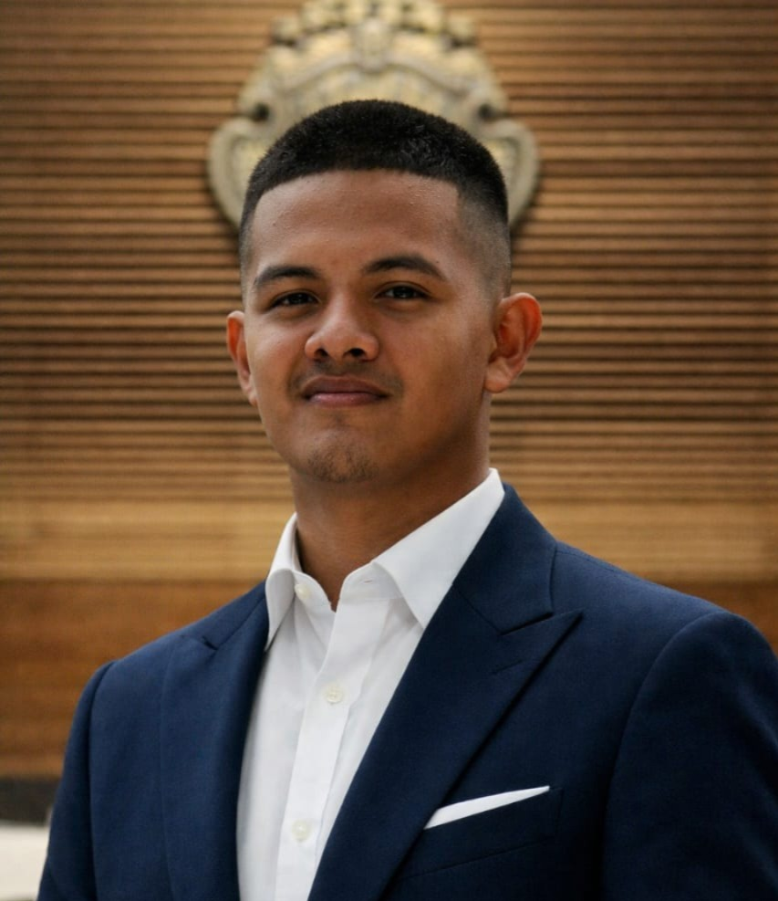
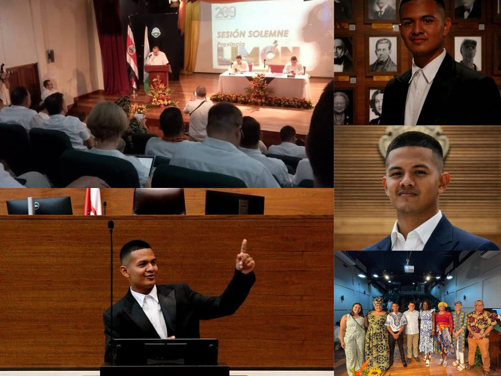
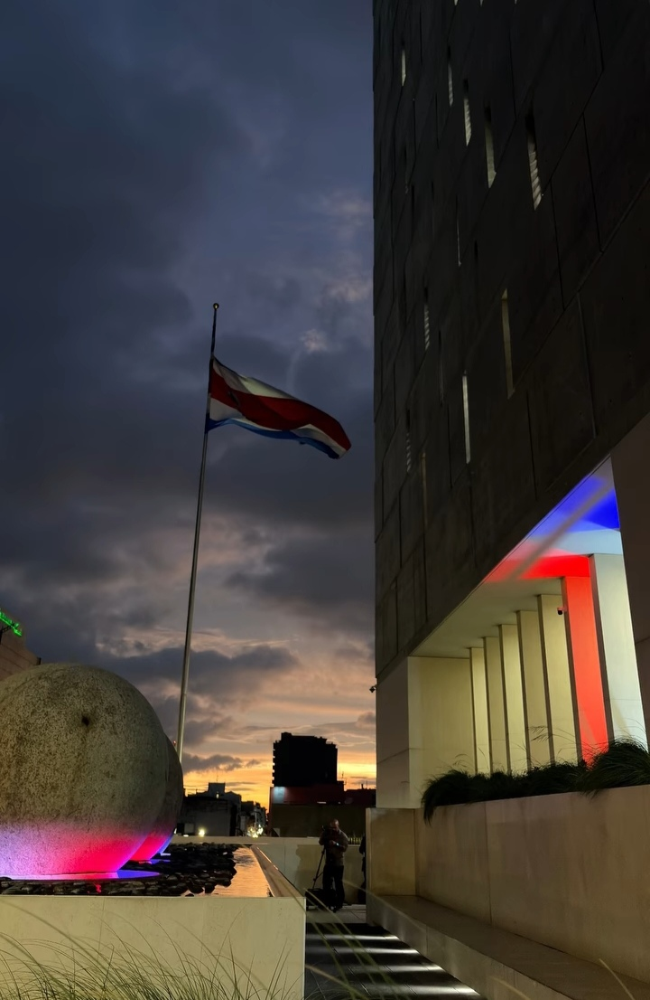
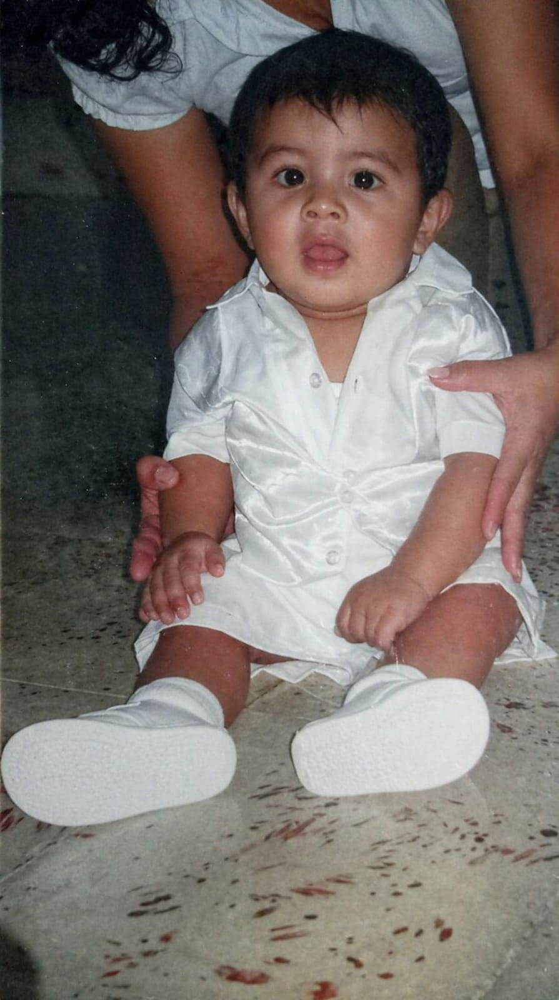
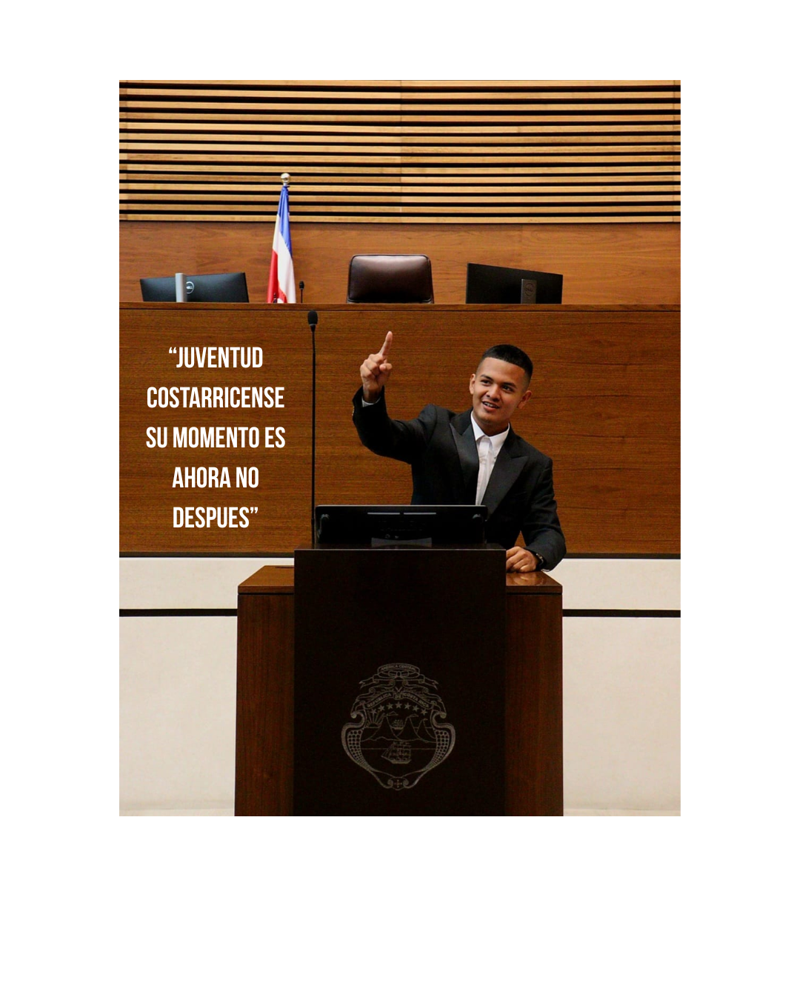

Soy Yermari Flores, joven limonense comprometido con construir un Costa Rica más justo, moderno y con oportunidades reales para todos. El cambio no espera.

Nací y crecí en Limón, una provincia que me enseñó el valor del esfuerzo, la comunidad y la lucha por lo que es justo. Fui testigo de cómo las regiones fuera del Valle Central son olvidadas por quienes deberían servir a toda la nación.
Esa realidad me marcó. Me formé en liderazgo, tecnología e incidencia política porque creo que la única forma de transformar Costa Rica es desde adentro: con personas comprometidas, preparadas y con los pies en la tierra.
No hablo de cambio desde la comodidad. Lo construyo desde hoy, con iniciativas concretas, con la juventud y con quienes creen que este país puede ser mejor de lo que es.



